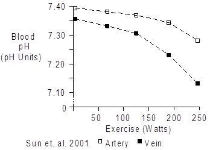
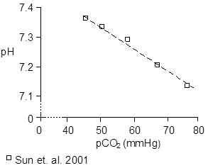
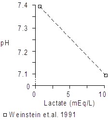

Exercise > Acid-Base Balance
Acidity is described in terms of hydrogen ion concentration ([H+], Mol/L) and pH units (pH).
pH = -log ([H+])
Since the hydrogen ion concentration is typically very small, a more useful version of the equation above is
pH = 9 - log ([H+])
where the units for [H+] are nMol/L.
Acidity is a function of many factors, but the two most important are the partial pressure of CO2 (pCO2) and the strong ion difference (SID) (Stewart 1978, Stewart 1983).
Strong ions are ions that are completely dissociated in solution. In plasma, sodium (Na+) and potassium (K+) are important strong cations, while chloride (Cl-), lactate (Lac-) and ketoacids (KA-) are important strong anions.
The strong ion difference is the sum of the strong cation concentrations minus the sum of the strong anion concentrations. Typical values for plasma are shown below.
| [Na+] | +144.6 |
| [K+] | +4.4 |
| [Cl-] | -107.5 |
| [Lac-] | -1.5 |
| [KA-] | ~0 |
| -------- | -------- |
| [SID] | +40.0 |
Chemistry and blood gas for a normal venous blood sample are shown below (Weinstein et. al. 1991).
| pCO2 | 41.3 |
| SID | 39.9 |
| [H+] | 43.3 |
| pH | 7.36 |
Using this blood data in Stewart’s analysis yields
[H+] = 42.0 * (pCO2 / SID)
pH = 7.37 + log (SID / pCO2)
The two most important acid-base factors in exercise are the increased production of CO2 and increased formation of lactic acid.
These factors apply to the circulating blood and also to the cells and interstitium of working muscle.
 pH
pH
Exercise typically leads to an acidosis that is proportional to the intensity of the exercise. If metabolism becomes anaerobic, large amounts of lactic acid accumulate and the pH falls precipitously. Blood pH as a function of exercise intensity is shown below.

Note the decrease in venous pH values, as blood on this side of the circulation takes a double hit from increasing pCO2 (see Blood Gases) and increasing lactate concentration (see Lactic Acid).
Carbon Dioxide
Increased blood pCO2 causes decreased blood pH. The data shown below comes from venous blood collected during exercise.

Arterial pCO2 is nearly unchanged during aerobic exercise, rising a bit with mild exercise and falling a bit when more strenuous exercise and lactic acidosis drive up ventilation. See Blood Gases.
Venous pCO2 is increased in exercise, reflecting the transport of large amounts of CO2 from working muscle to lung. Again, see Blood Gases.
Lactic Acid
Blood lactic acid concentration increases a bit with mild exercise, but the increases really don’t have an important effect on blood pH.
With more severe exercise, anaerobic metabolism kicks in and lactic acid pours out of the working muscle into the blood stream (see Lactic Acid). In these instances, blood lactic acid concentration has a significant effect on pH, as the figure below illustrates.

References
Stewart, P. Independent and dependent variables of acid-base control. Respir. Physiol. 33:9-26, 1978.
Stewart, P. Modern quantitative acid-base chemistry. Can. J. Physiol. Pharmacol. 61:1444-1461, 1983.
Sun, X.-G., J.E. Hansen, W.W. Stringer, H. Ting and K. Wasserman. Carbon dioxide pressure-concentration relationship in arterial and mixed venous blood during exercise. J. Appl. Physiol. 90:1798-1810, 2001.
Weinstein, Y., A. Magazanik, A. Grodjinovsky, O. Inbar, R.A. Dlin and P.A. Stewart. Reexamination of Stewart’s quantitative analysis of acid-base status. Med. Sci. Sports Exerc. 23:1270-1275, 1991.